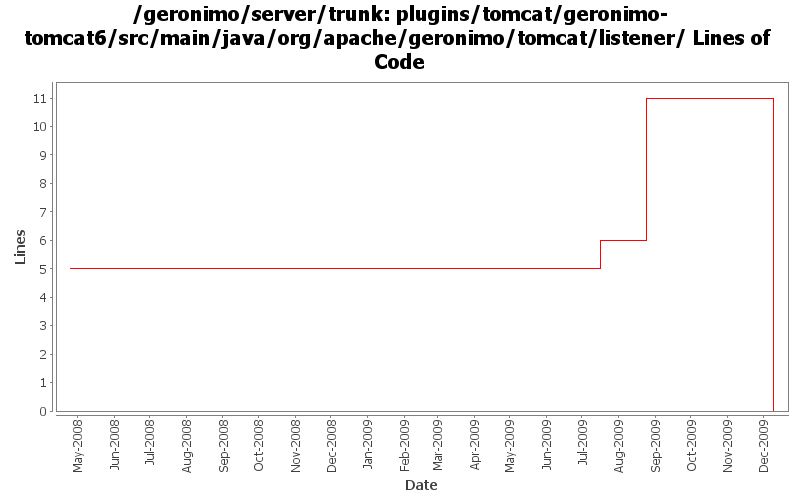

[root]/plugins/tomcat/geronimo-tomcat6/src/main/java/org/apache/geronimo/tomcat/listener

| Author | Changes | Lines of Code | Lines per Change |
|---|---|---|---|
| Totals | 13 (100.0%) | 18 (100.0%) | 1.3 |
| djencks | 5 (38.5%) | 12 (66.7%) | 2.4 |
| xuhaihong | 4 (30.8%) | 5 (27.8%) | 1.2 |
| jdillon | 3 (23.1%) | 1 (5.6%) | 0.3 |
| gawor | 1 (7.7%) | 0 (0.0%) | 0.0 |
GERONIMO-4980 Use Tomcat 7 in Geronimo 3.0
0 lines of code changed in 3 files:
missing import
1 lines of code changed in 1 file:
GERONIMO-4811 The new PolicyContext is not set while forwarding to another web application
5 lines of code changed in 1 file:
GERONIMO-4155, GERONIMO-4778 Prevent use of a run-as role that isn't configured to supply a non-null Subject. Make servlet dispatch follow run-as roles
0 lines of code changed in 2 files:
GERONIMO-4752 rewrite toomcat security to support jaspic and better support jacc
6 lines of code changed in 1 file:
GERONIMO-4124 clean up jacc usage
5 lines of code changed in 1 file:
register AprLifecycleListener to initialize the APR library (GERONIMO-4103)
0 lines of code changed in 1 file:
More loggers back to static
1 lines of code changed in 1 file:
(GERONIMO-3985) Use SLF4J as the primary logging facade for Geronimo
0 lines of code changed in 2 files: